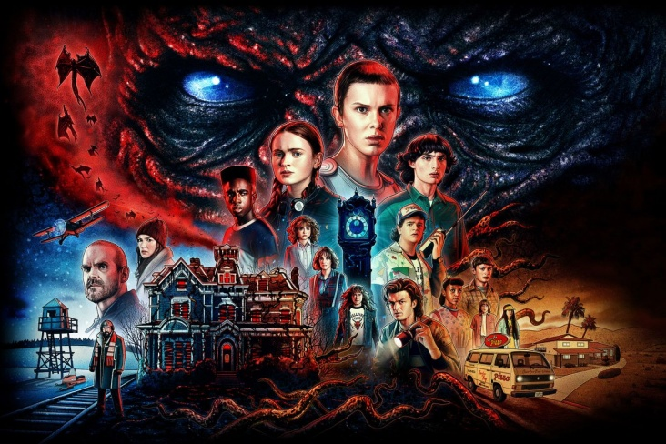
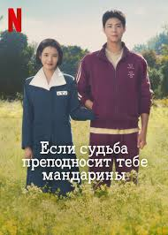

Добро пожаловать на сайт о сериалах
Популярно сейчас
На данный момент (ноябрь 2025) одним из самых популярных сериалов считается «Очень странные дела» (Stranger Things). Это американская драма и фантастика, которая идёт с 2016 года и в 2025 выйдет финальный сезон. Сериал имеет высокие оценки от зрителей и критиков — IMDb около 8.6. Сюжет рассказывает о загадочных происшествиях и сверхъестественных явлениях в небольшом городке, постепенно раскрывая тайны параллельных измерений и секретных экспериментов.
Нажмите на картинку, чтобы рассмотреть постер лучше
Наш выбор
Рекомендую обратить внимание на сериал 2025 года «Если судьба преподносит тебе мандарины». Этот драматический сериал с красивыми пейзажами острова Чеджу рассказывает о жизни двух молодых людей — амбициозной поэтессы и её тихого поклонника, чьи судьбы переплетаются на фоне жизненных испытаний на протяжении десятилетий. Сериал получил высокие оценки и признание за глубокие эмоции, красивые визуальные решения и трогательные истории персонажей. Рейтинг на Кинопоиске около 9.2/10, что говорит о его качестве и популярности.
Нажмите на картинку, чтобы рассмотреть постер лучше
Вернуться наверх